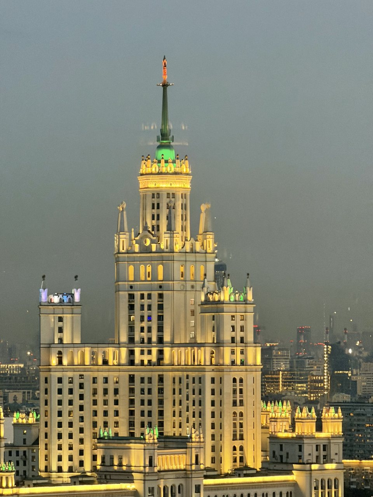

Статьи ·
Крыши с видом на Кремль: откуда виден исторический центр
Кремль виден только с двух крыш нашего каталога — у метро Таганская и Курская: сравниваем их панорамы и рассказываем, когда исторический центр сверху смотрится лучше всего.
Кремль — первое, что хочется найти глазами, когда поднимаешься над Москвой. Но вид на Кремль сверху достаётся не так просто: из одиннадцати крыш нашего каталога он открывается только с двух — у метро Таганская и у метро Курская. Обе точки показывают исторический центр, но картинки получаются совсем разными. Разбираем, какую крышу выбрать под нужный кадр и в какое время подниматься.
Почему Кремль с крыши — редкость
Исторический центр Москвы невысокий, и это его достоинство: старая Москва не задавлена небоскрёбами. Обратная сторона — смотреть на неё сверху почти неоткуда. Чтобы Кремль сложился в одну картину с городом вокруг, должны совпасть три условия.
- Высота. Точка должна быть заметно выше соседних домов. С обычной крыши в несколько этажей видны соседние дворы, а не панорама.
- Открытая линия взгляда. Даже с высокой площадки Кремль легко потерять: достаточно одного здания на пути. Направление важно не меньше высоты.
- Доступ. Большинство крыш закрыто: это технические зоны, куда посторонних не пускают. Искать открытую дверь самостоятельно — плохая идея: это небезопасно, и наверху вас никто не ждёт.
Поэтому вопрос «откуда виден Кремль в Москве» на практике сводится к другому: куда можно подняться легально и без суеты.
И про ожидания. С крыши Кремль — часть большой панорамы, а не картинка во весь кадр. В ясную погоду башни и купола различимы, но смотрите вы на город целиком, и Кремль в нём — главный ориентир среди высоток и старых крыш.
Таганская или Курская: два разных Кремля
Выбирая крышу с видом на Кремль, сначала решите, что ещё должно попасть в панораму: от этого и зависит выбор.
Таганская: Кремль, высотка и река
С крыши у метро Таганская башни Кремля и купола собора Василия Блаженного видны в дымке чуть левее центра панорамы. Справа — высотка на Котельнической набережной, ниже — Москва-река, а в самой дальней точке горизонта собираются башни Москва-Сити. Исторический центр, сталинская высотка, река и деловой квартал в одном развороте — та самая открыточная Москва.
Кремль отсюда далеко, поэтому лучше всего он читается на закате, когда башни превращаются в графичные силуэты на оранжевом небе. Вечером у высотки на Котельнической включается подсветка, и она становится самым ярким пятном в кадре.
Курская: купола и море старых крыш
С крыши у метро Курская Кремль стоит в центре панорамы. Хорошо читаются золотые купола соборов и колокольня Ивана Великого, которая поднимается над остальными постройками, — по ней проще всего отыскать кремлёвский ансамбль. Левее по горизонту — высотка МИД со ступенчатым силуэтом и шпилем.
Главное отличие — передний план. Под вами уходит вниз сплошное поле московских крыш: скаты, мансарды, трубы, дворы. Появляется ощущение, что вы стоите над старым городом, а не просто смотрите вдаль. Если на Таганской Кремль — часть открытки, то здесь он вырастает из моря крыш.
Что выбрать под ваш кадр
- Классическая Москва с рекой — Таганская. Башни Кремля, собор Василия Блаженного и Котельническая высотка узнаются сразу, даже если вы в городе впервые.
- Старая и новая Москва — Таганская. К историческому центру здесь добавляются башни Сити на горизонте.
- Купола и Иван Великий — Курская. Кремль в центре панорамы, а колокольня заметно поднимается над соборами.
- Фактура старого города — Курская. Крыши на переднем плане делают кадр многослойным, а левее Кремля по горизонту стоит высотка МИД.
Исторический центр в разное время суток
Обе крыши лучше всего работают вечером, но и у других часов есть свой смысл.
- День. Панорама подробная, ориентиры легко найти глазами, но свет плоский: купола и башни теряют объём.
- Золотой час. Примерно за час до заката тёплый свет ложится на фасады и купола — на Таганской с этого начинается самый красивый отрезок вечера.
- Закат. С Таганской башни и собор Василия Блаженного уходят в силуэты, а Сити на горизонте становится тёмным зубчатым контуром на светлой полосе неба. На Курской подсвечивается дымка над центром, купола ловят последний свет, а крыши переднего плана погружаются в тень — картинка расслаивается на планы.
- Первые полчаса после заката. В городе включается подсветка. На Таганской начинает светиться высотка на Котельнической, а на Курской в вечерней дымке почти графично проступает высотка МИД.
Отсюда практичный совет: записывайтесь так, чтобы подняться примерно за час до заката. Базовая прогулка длится 1 час, и если хочется застать ещё и вечернюю подсветку, спросите о продлении — 500 ₽ с человека за час, если площадка свободна.
Отдельно про погоду. С обеих точек центр — дальний план, и в сильную дымку или дождь он может теряться. Прозрачного воздуха никто не гарантирует, поэтому, если идёте именно за Кремлём, выбирайте дату по прогнозу.
Как снять Кремль на телефон
Фотографа в формате прогулки нет: снимайте на телефон или приходите со своим. Для дальнего плана пригодятся два приёма.
- Оптический зум вместо кадрирования. Если у телефона есть телеобъектив, снимайте Кремль на него, а не обрезайте широкий кадр потом: сильный цифровой зум быстро превращает купола в кашу.
- Экспозиция по небу. На закате коснитесь яркой части неба и немного убавьте яркость — силуэты станут чёткими, а небо не выгорит.
Как проходит прогулка
Сначала откройте каталог крыш на главной: там собраны площадки, которые доступны сейчас, и наши кадры с каждой. Набор крыш время от времени меняется, и если нужная временно не работает, это видно на её странице.
Дальше оставьте заявку через форму на главной или напишите в Telegram-бот и укажите, какой Кремль вам ближе — с рекой и Котельнической или с куполами и высоткой МИД. Если время свободно, мы подтвердим запись и пришлём детали встречи. Заранее известна только станция — у метро Таганская или у метро Курская, а точное место встречи сообщаем после подтверждения записи.
Наверх вы поднимаетесь вместе с сопровождающим, на площадке он коротко объясняет правила. Потом у вас час на панораму и съёмку. Стоимость — от 2000 ₽ за человека. Возьмите удобную нескользящую обувь и тёплый слой: вечером на высоте прохладнее, чем на улице.
Читайте также: «Что видно с крыш Москвы» — обзор ориентиров со всех крыш каталога, «Где смотреть закат в Москве» — как подгадать прогулку под золотой час и «Вечерняя Москва с крыши» — что видно после заката и когда стоит продлить прогулку.
FAQ
Частые вопросы о виде на Кремль
Чем вид на Кремль с Таганской отличается от вида с Курской?
С Таганской Кремль и собор Василия Блаженного — часть открыточной панорамы с высоткой на Котельнической, Москвой-рекой и Сити на горизонте. С Курской Кремль стоит в центре кадра: видны золотые купола и колокольня Ивана Великого, левее — высотка МИД, а на переднем плане лежит поле старых крыш.
Насколько крупно Кремль виден с крыши?
Это дальний план панорамы, а не вид во весь кадр. В ясную погоду башни и купола хорошо различимы, а для деталей пригодится оптический зум телефона. В сильную дымку центр может теряться.
Во сколько подниматься, чтобы увидеть Кремль в лучшем свете?
Примерно за час до заката: сначала тёплый свет ложится на фасады и купола, затем башни превращаются в силуэты на закатном небе. Чтобы застать ещё и вечернюю подсветку, прогулку можно продлить — 500 ₽ с человека за час, если площадка свободна.
Над городом